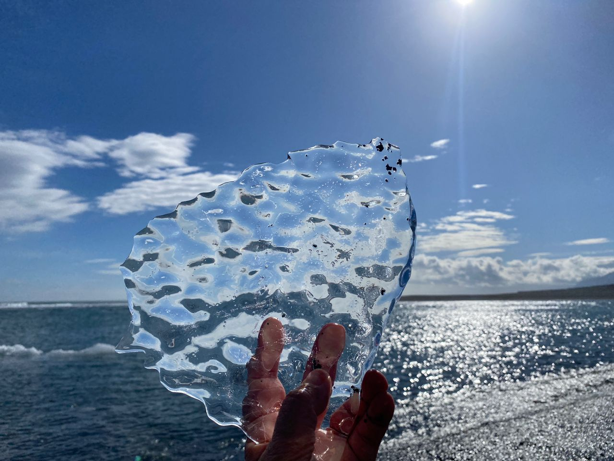

Real Story · 中文
25/4 — sleeping area at Höfn Campsite.
25 April 2024，我 overnight at Höfn Campsite。 这一天的 Iceland，不只是风景很美， 而是每一个小动作都变成很特别的 road life memory。
Snow Water
Collecting snow water for cleaning.
在 Iceland，我 collect snow water for some cleaning purposes。 这种事情在普通城市不会发生， 但在 Iceland 的路上，雪就是环境的一部分， 也可以变成生活的一部分。
Campervan life 很真实： 不是每天只有美景， 也有清洁、整理、用水、煮饭这些小动作。 可是在 Iceland，连这些小动作都会被雪山包围。
Toyotaki Lunch
吃午餐配冰川。
午餐在 Toyotaki 里面吃。 但是这不是普通午餐。 这是吃午餐配冰川。
一碗简单的 lunch，旁边是 Iceland 的 glacier view。 这种 contrast 很难形容： 车里是日常生活，车外是像另一个星球的风景。
Jökulsárlón
Jökulsárlón Glacier Lagoon — 太难得了。
然后来到 Jökulsárlón Glacier Lagoon。 真的太难得了。
蓝色的冰、黑色的岸、流动的水、远处的冰川， 全部放在一起的时候， 人会有一种很安静的震撼。 这不是 ordinary scenic spot。 这是那种你站在那里，会知道自己正在看见很 rare 的东西。

English Memory Summary
A day when daily life and glacier wonder met.
On 25 April 2024, Tuzi overnighted at Höfn Campsite. During the day, Iceland road life mixed practical daily tasks with rare natural beauty: collecting snow water for cleaning, eating lunch inside Toyotaki beside a glacier, and visiting Jökulsárlón Glacier Lagoon.
Jökulsárlón felt too rare to forget — blue ice, black shore, moving water, and glacier light. It was one of those Iceland places where the ordinary traveller becomes quiet.
Heart Statement
有些地方不是让你打卡，是让你知道自己很幸运。
On this Iceland day, snow became water for cleaning, lunch came with a glacier, and Jökulsárlón placed a piece of old ice into my hands.